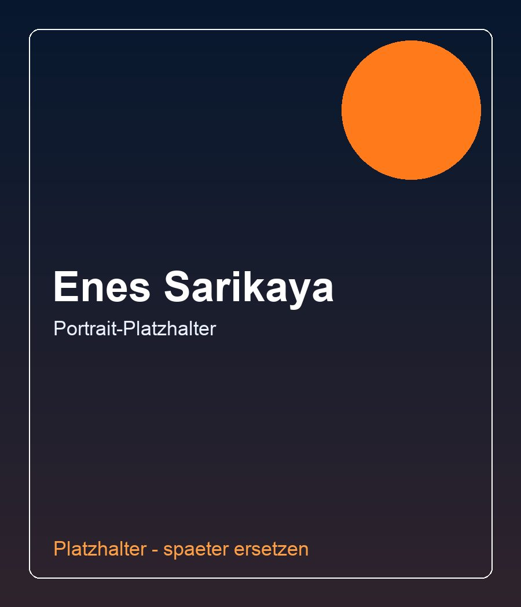

ETF-Investments. Steuerstruktur. Staatliche Förderung.
ETF-Investments mit Steuer- und Förderstrategie für Gutverdiener
Trustplan prüft, wie du dein Einkommen effizienter strukturierst: mögliche Kosteneinsparungen, weniger Steuerlast, staatliche Förderungen und ein langfristiger ETF-Vermögensaufbau in einer klaren Finanzarchitektur.
Vorstellungsvideo mit Enes Sarikaya
Video folgt in Kürze
400+ Mandanten
Unabhängige Beratung
Keine Garantieversprechen
Alle Werte sind unverbindliche Orientierungsgrößen. Ob und in welcher Höhe Potenziale bestehen, hängt von deiner persönlichen Situation ab.
Vermögensleck-Analyse
Wo dein Geld heute verloren geht
Ein gutes Einkommen ist nur der Anfang. Entscheidend ist, wie effizient Steuern, Absicherung, Vorsorge, Investments und Liquidität zusammenspielen.
Einkommen
Dein Finanzsystem
Gutes Einkommen
Hohe Steuerlast
Zu teure Verträge
Fehlende Förderungen
Unstrukturierte Vorsorge
Was nach möglichen Lecks bleibt
Verfügbares Vermögen
Trustplan AnalyseTrustplan identifiziert mögliche Lecks und bringt Struktur in dein Finanzsystem. Potenziale werden individuell geprüft.
Hohe Steuerlast
Viele zahlen jedes Jahr mehr als nötig. Trustplan prüft mögliche Optimierungspotenziale innerhalb der bestehenden Struktur.
Zu teure Verträge
Über Jahre entstehen oft doppelte Leistungen, alte Tarife und unnötige Kosten.
Fehlende Förderungen
Fördermöglichkeiten werden häufig nicht vollständig genutzt oder strategisch eingebunden.
Unstrukturierte Vorsorge
Wer Vermögen aufbauen will, braucht mehr als einzelne Produkte. Es braucht eine Architektur, die heute und später funktioniert.
Warum Struktur fehlt
Warum die meisten Menschen finanziell ohne Plan durchs Leben gehen
01
Finanzbildung fehlt
Niemand zeigt dir das System
In Schule und Ausbildung lernen wir kaum etwas über Steuern, Vermögensaufbau, Absicherung oder Förderungen. Viele starten deshalb ohne echte Orientierung.
02
Einkommen wächst
Das Geld kommt, aber der Plan fehlt
Mit gutem Einkommen entstehen mehr Entscheidungen: Versicherungen, Sparpläne, Altersvorsorge, Steuern. Ohne Struktur bleibt vieles Stückwerk.
03
Einzelprodukte
Bank, Vertreter, Empfehlung von Bekannten
Oft entstehen einzelne Verträge, aber kein System. Versicherung hier, Sparvertrag dort, Investment später - ohne Blick darauf, wie alles zusammenspielt.
04
Verantwortung steigt
Familie, Immobilie, Vermögen, Rente
Je mehr Verantwortung du trägst, desto teurer werden Lücken. Steuerlast, Finanzierung, Absicherung und Vorsorge müssen plötzlich gemeinsam funktionieren.
05
Trustplan
Aus Einzelteilen wird Finanzarchitektur
Trustplan verbindet Steuern, Versicherungen, Altersvorsorge, Investments und Immobilien zu einer Strategie, die zu deiner Situation passt.
Finanzarchitektur
Der Trustplan-Kompass
Vier Kernbereiche werden zu einer Strategie verbunden, die zu Einkommen, Lebensphase und Zielen passt.
Deine individuelle FinanzstrategieDeine Finanzstrategie
Steuern
Absicherung
Altersvorsorge
VermögensaufbauVermögen
Die vier Bereiche, die über deine finanzielle Zukunft entscheiden
Steuern
Wie viel zahlst du wirklich - und was wäre legal optimierbar?
Versicherungen
Bist du dort abgesichert, wo es zählt - oder zahlst du für Dinge, die du nicht brauchst?
Altersvorsorge
Reicht dein heutiger Weg wirklich für später?
Vermögensaufbau
Wie setzt du dein Einkommen so ein, dass es langfristig für dich arbeitet?
Der Unterschied zwischen Einzelprodukten und Finanzarchitektur
Status Quo
- Hohe Steuerlast
- Keine Gesamtstrategie
- Unübersichtliche Verträge
- Unsicherheit
Mit Trustplan
- Klare Struktur
- Optimierte Strategie
- Übersicht
- Planbarkeit
Zielgruppen
Für wen Trustplan besonders sinnvoll ist
Trustplan richtet sich an Menschen, die gut verdienen, Verantwortung tragen und ihre Finanzen nicht länger dem Zufall überlassen wollen.
Gutverdienende Angestellte
Du verdienst gut, hast aber das Gefühl, dass Steuern, Versicherungen und Vorsorge nicht optimal zusammenspielen. Trustplan hilft dir, deine finanzielle Struktur klarer zu betrachten.
- hohe Steuerlast
- PKV-Fragen
- Altersvorsorge
- Investments
Selbstständige
Du trägst Verantwortung für dein Einkommen, deine Absicherung und deine Zukunft. Genau deshalb braucht deine Finanzstruktur mehr als einzelne Verträge.
- Steuerstruktur
- Liquidität
- Absicherung
- Vermögensaufbau
Unternehmer
Wenn Einkommen, Vermögen, Immobilien und Risiko zusammenkommen, braucht es eine klare Strategie. Trustplan hilft, diese Bereiche ganzheitlich zu verbinden.
- Vermögensstruktur
- Immobilien
- Risikoabsicherung
- langfristige Planung
Kostenlose Tools
Kostenlose Finanz-Tools für deine erste Orientierung
Nutze unsere Tools, um ein erstes Gefühl für deine finanzielle Situation zu bekommen. Eine genaue Bewertung erfolgt anschließend in der persönlichen Potenzialanalyse.
Investmentrechner
Berechne, wie sich regelmäßige Investments langfristig entwickeln könnten.
Investmentrechner öffnenPKV-Rechner
Prüfe, ob eine individuelle PKV-Analyse für deine Situation sinnvoll sein könnte.
PKV-Rechner öffnenFinanz-Röntgenbild
Beantworte wenige Fragen und erhalte eine erste Einschätzung deiner Finanzstruktur.
Finanz-Röntgenbild startenMandantenstimmen
Ergebnisse echter Mandanten
Die Beispiele zeigen typische Ausgangslagen. Individuelle Ergebnisse hängen immer von der persönlichen Situation ab.
Hohe Steuerlast und keine Strategie
Lösung: Ganzheitliche Analyse
Ergebnis: Mehr Klarheit und bessere Struktur
Zu viele Versicherungen ohne Überblick
Lösung: Vertragsanalyse und Neuordnung
Ergebnis: Mehr Übersicht und geringere laufende Belastung
Gutes Einkommen, aber kein Vermögenssystem
Lösung: Steuerlich optimierte Investmentstrategie
Ergebnis: Langfristiger Vermögensaufbau mit klarer Struktur
Unsicherheit beim Einstieg in Immobilien
Lösung: Begleitung bei Objektprüfung, Finanzierung und Strategie
Ergebnis: Strukturierter Einstieg in Kapitalanlagen
Wenn die Struktur steht, beginnt der nächste Schritt
Immobilien und Fremdkapitalhebel können ein Baustein sein, wenn Finanzierung, Absicherung, Steuern und Liquidität zusammenspielen.
Objektfindung
Passende Objekte werden mit Blick auf Lage, Zahlen, Risiken und Gesamtstrategie eingeordnet.
Finanzierung strategisch planen
Die Finanzierung wird nicht isoliert betrachtet, sondern in deine Liquidität und Absicherung eingebettet.
Begleitung bis zur Vermietung
Von der Prüfung bis zur Vermietung geht es um Struktur statt Bauchgefühl.
Keine Garantieformulierungen. Keine sicheren Renditeversprechen.

Bildplatzhalter: Enes Sarikaya
Über Enes
Wer hinter Trustplan steht
Mein Name ist Enes Sarikaya. Ich bin unabhängiger Finanzmakler und habe Trustplan gegründet, weil viele Menschen zwar gut verdienen, aber trotzdem keine echte Struktur in ihren Finanzen haben.
Oft wurden Steuern, Versicherungen, Altersvorsorge, Investments und Immobilien über Jahre getrennt voneinander betrachtet. Genau hier setzt Trustplan an.
Als unabhängiger Finanzmakler bin ich nicht an eine Bank oder Versicherungsgesellschaft gebunden. Das bedeutet: Ich kann verschiedene Lösungen vergleichen und gemeinsam mit dir prüfen, was wirklich zu deiner Situation passt.
Mein Ziel ist nicht, dir irgendein einzelnes Produkt zu verkaufen. Mein Ziel ist, deine finanzielle Gesamtsituation verständlich zu machen und daraus eine klare Strategie zu entwickeln.
Unabhängig
Persönlich
Ganzheitlich
Langfristig orientiert
Verständlich
Finanzielle Entscheidungen sollten nicht komplizierter wirken, als sie sein müssen. Sie brauchen nur jemanden, der das ganze Bild betrachtet.
So läuft die Zusammenarbeit ab
Finanzcheck starten
Du beantwortest die wichtigsten Fragen im Mini-Funnel.
Erstgespräch führen
Wir prüfen gemeinsam, ob und wie Trustplan helfen kann.
Situation analysieren
Steuern, Versicherungen, Vorsorge, Investments und Ziele werden geordnet.
Strategie entwickeln
Aus Einzelteilen wird eine klare, nachvollziehbare Finanzstruktur.
Langfristig begleiten
Dein Plan wird regelmäßig an neue Lebensphasen angepasst.
Potenzialverlust
Was kostet dich Nichtstun?
Viele finanzielle Verluste fallen im Alltag kaum auf. Über Jahre können aus kleinen Lecks große Summen werden.
= 5.000 € in 10 Jahren
= 10.000 € in 10 Jahren
= 20.000 € in 10 Jahren
Keine Garantie. Nur einfache Beispielrechnung zur Veranschaulichung.
Kostenlose Potenzialanalyse
Kostenlose Potenzialanalyse starten
Der Mini-Funnel führt dich Schritt für Schritt durch die wichtigsten Angaben. Danach meldet sich Trustplan zeitnah für ein unverbindliches Erstgespräch.
Häufige Fragen
Ist das Erstgespräch kostenlos?
Ja, das Erstgespräch ist kostenlos und unverbindlich.
Für wen ist Trustplan geeignet?
Für Gutverdiener, Selbstständige, Unternehmer und Menschen, die ihre finanzielle Struktur ganzheitlich ordnen möchten.
Arbeitet Trustplan unabhängig?
Ja. Trustplan ist nicht an eine Bank oder Versicherungsgesellschaft gebunden.
Muss ich bestehende Verträge kündigen?
Nein. Zuerst wird geprüft, was sinnvoll ist. Bestehende Verträge können gut, veraltet oder unpassend sein.
Wie läuft die Analyse ab?
Trustplan betrachtet deine Ausgangslage, Ziele und bestehenden Strukturen. Daraus entsteht ein nachvollziehbarer Strategieansatz.
Was kostet die Zusammenarbeit?
Das hängt vom Umfang der Beratung und Begleitung ab. Kosten werden transparent besprochen, bevor eine Zusammenarbeit startet.
Gibt es garantierte Einsparungen?
Nein. Individuelle Ergebnisse hängen von deiner persönlichen Situation ab. Es gibt keine Garantie auf Einsparungen, Renditen oder Förderungen.
Unterstützt Trustplan auch bei Immobilien?
Ja, Immobilien können als Baustein betrachtet werden, wenn sie zur Gesamtstrategie passen.
Warte nicht, bis du jahrelang Potenzial verschenkst
Wenn du gut verdienst, solltest du wissen, ob deine Finanzen wirklich effizient aufgestellt sind.
Kostenloses Erstgespräch buchen